WhiffleWash
The problemLaundry pods don't always dissolve. They stick to clothes or get trapped in the drum, and the whole wash is wasted.

A Whiffle ball container that agitates the pod and floods it with water, so it fully dissolves and never touches your clothes.
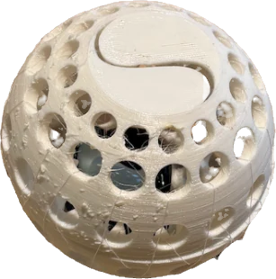
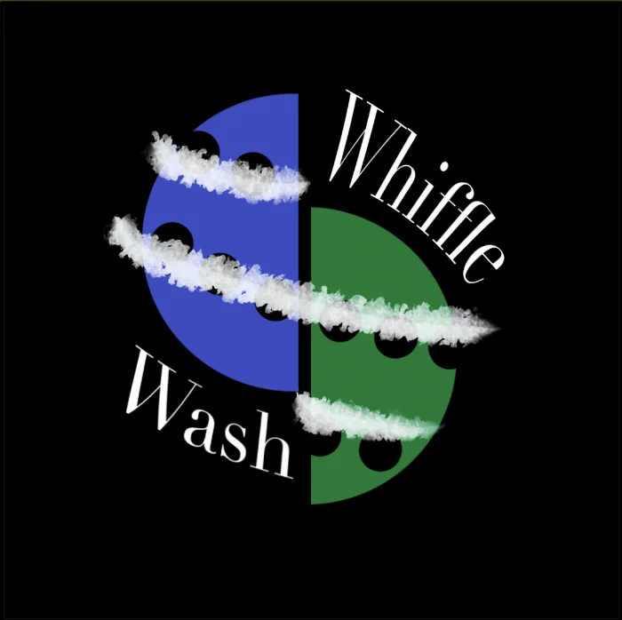
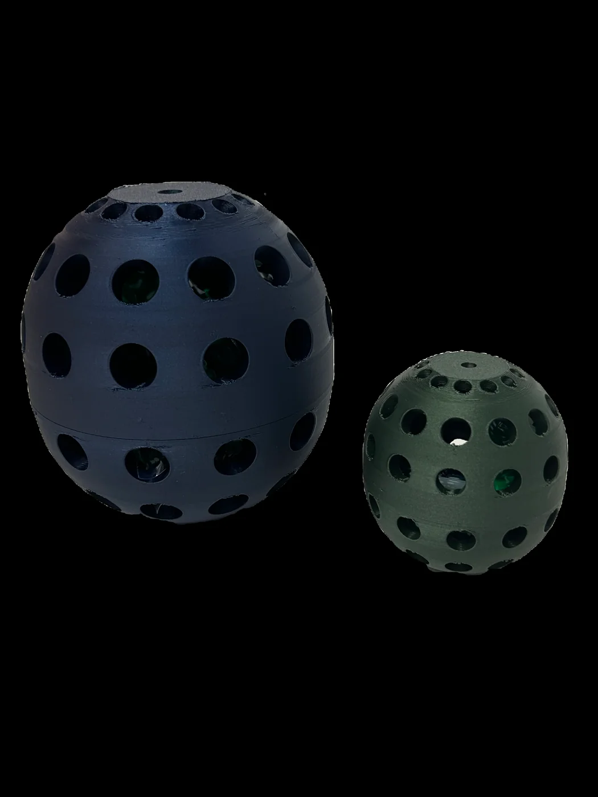
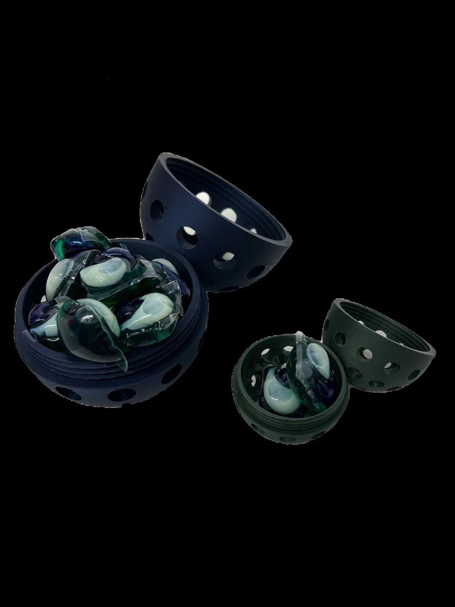
Infomercial

The problem, up close
One or both of these make a wash cycle ineffective:
- The pod doesn't fully dissolve and gets stuck on clothes.
- The pod gets trapped in the washing machine drum.
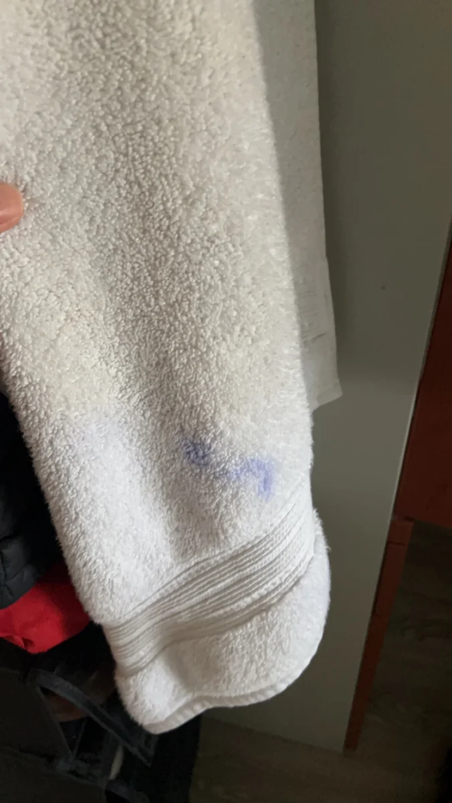
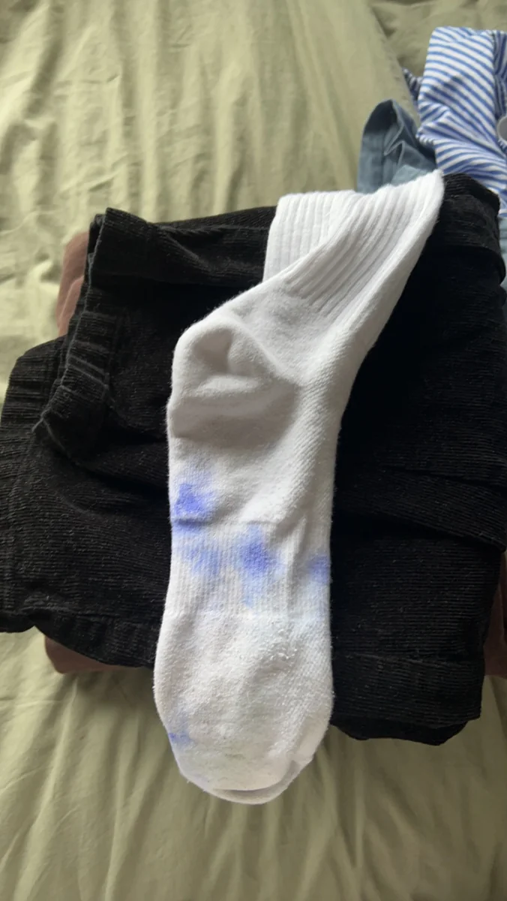
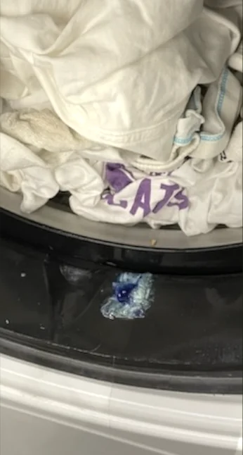
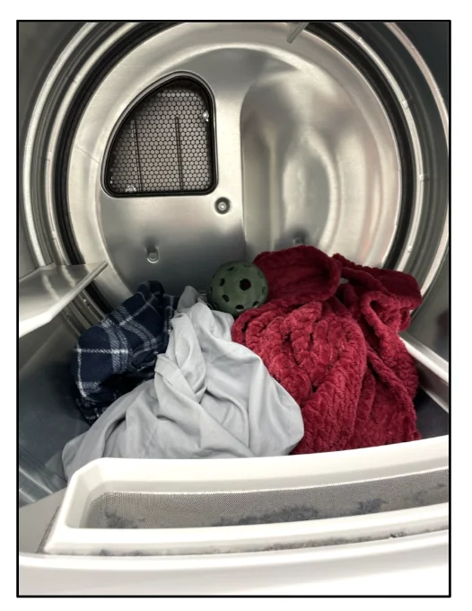
Ideation
We tested how Tide Pods dissolve using two methods: cold water dissolution and spiking.
- The blue (whitener) section is the hardest to dissolve.
- A 2 cm long, 1.5 cm wide spike alone doesn't guarantee dissolution.
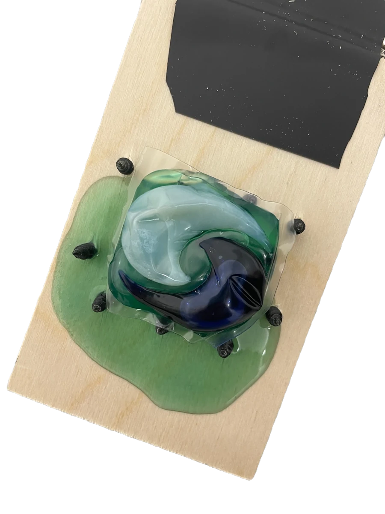
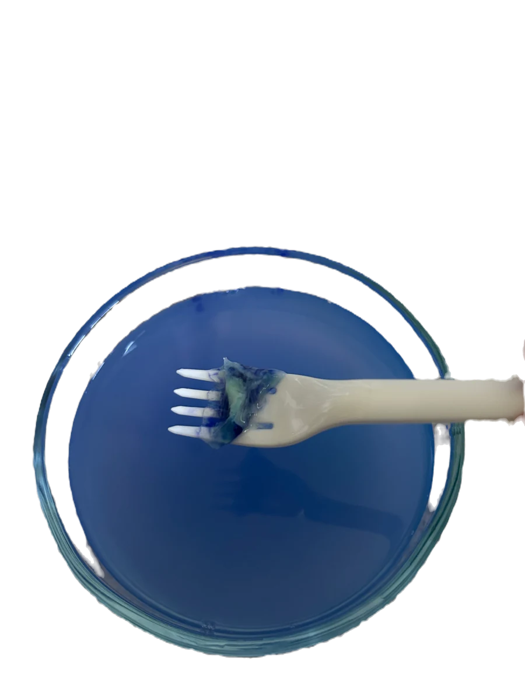
Development
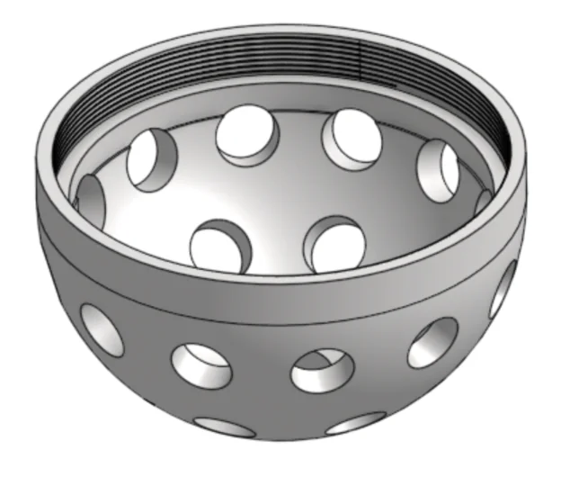
Whiffle ball mockup
The base idea: water flows through for dissolution while the pod stays enclosed, away from clothes.
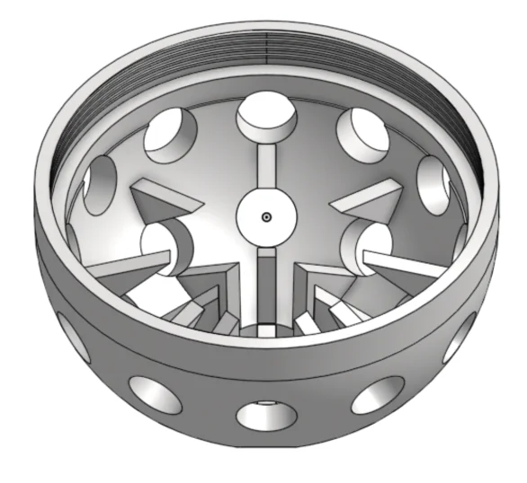
Linear holes and threads
Evenly spaced holes for water flow, plus threads as a cheap, simple, sustainable lock.
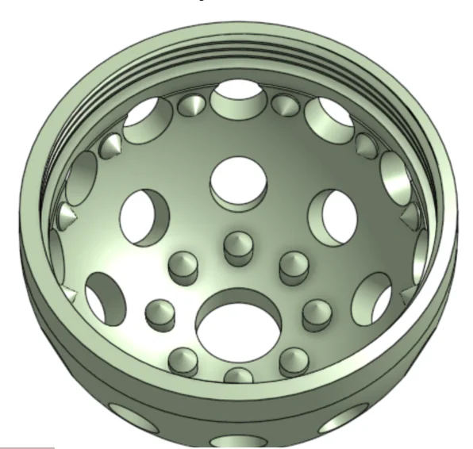
Tall thin protrusions
Added the spiking idea inside the ball to agitate the pod during the wash.
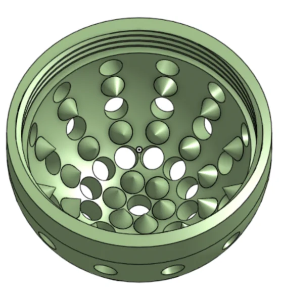
Conical protrusions
Cone shapes for more contact area, easier printing, and more strength.
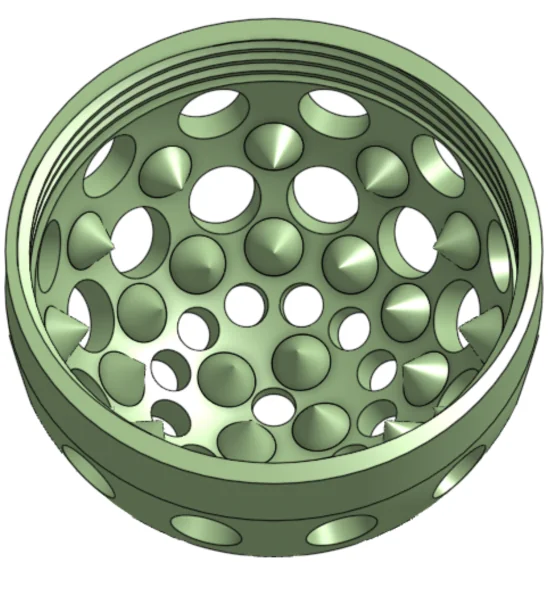
Tighter spacing
Holes and protrusions packed closer for more flow and agitation. Holes resized to 0.6 and 1 cm based on testing, so less detergent escapes.
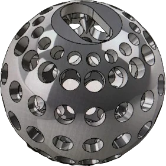
Material change
Switched to TPU for flexibility and less noise. The pod now drops in from the top instead of twisting the halves apart. Holes and spikes tuned through factorial testing.
Meeting specs
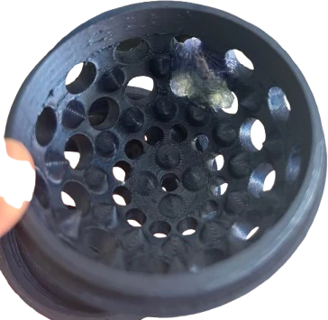
not your clothes
| Metric | Marginal | Ideal | Prototype |
|---|---|---|---|
| Stuck on clothes | ≤ 10% | 0% | 0% |
| Trapped in drum | ≤ 5% | 0% | 0% |
| Full dissolution | 8 / 10 | 10 / 10 | 10 / 10 |
| Hole size (cm) | < 1.5 | ≤ 1.0 | 0.6–1.0 |
| Wall (mm) | ≥ 4 | ≥ 6 | 6 |